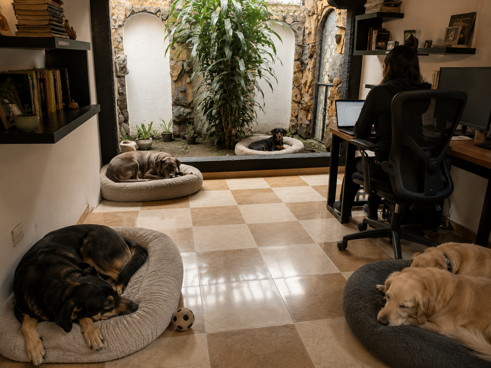
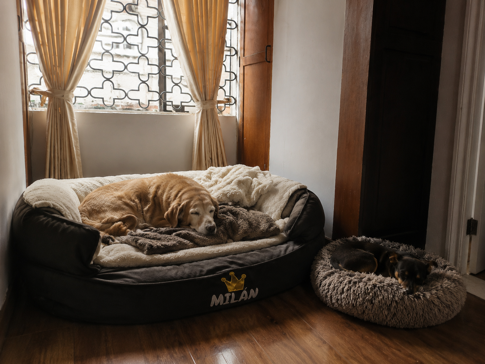
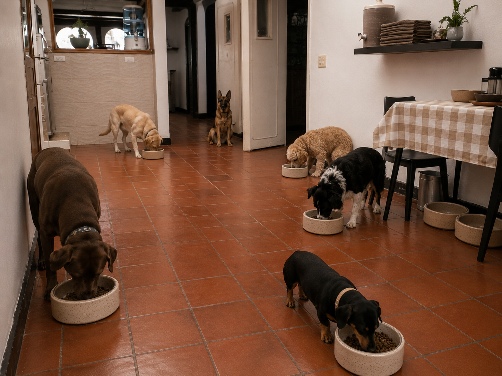
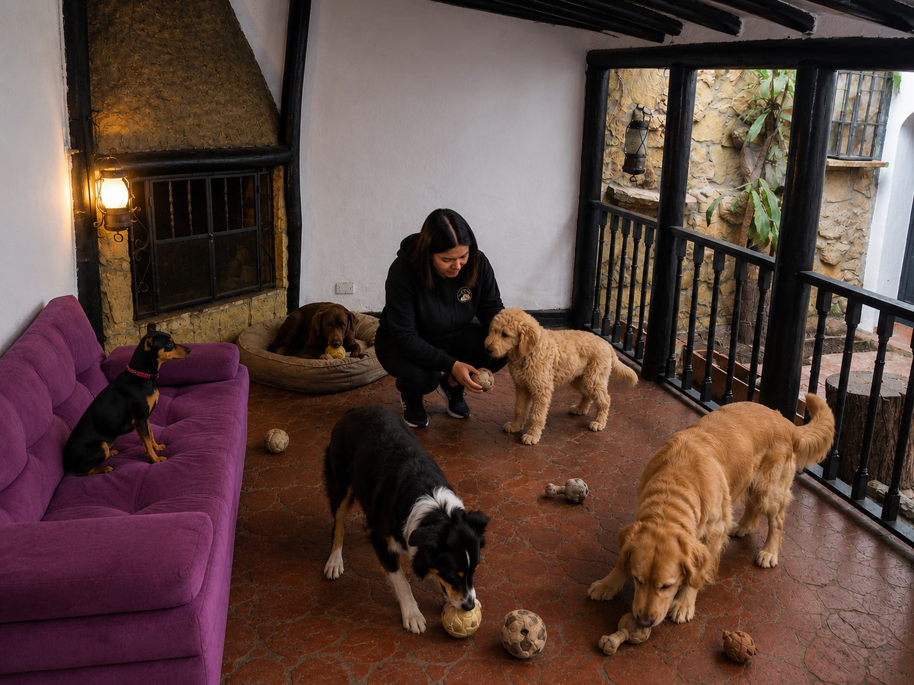
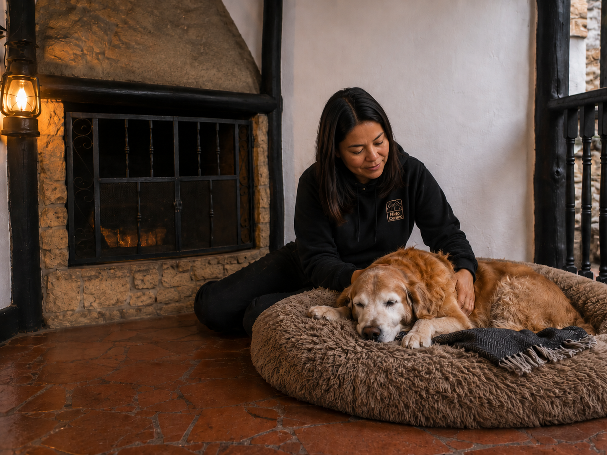

Bogotá · convivencia canina estructurada
Máx. 5 perros
Capacidad limitada para proteger la estabilidad del grupo, leer mejor cada caso y sostener una convivencia más equilibrada.
Evaluación previa
Todo nuevo caso pasa por revisión de perfil, energía, compatibilidad, zona y viabilidad antes de confirmar ingreso o estancia.
Membresía Fundadora
Primeros 5 clientes de plan mensual con beneficios de lanzamiento, tarifa protegida y prioridad de cupo.
Convivencia canina estructurada y bienestar animal
Nido Canino es un servicio premium para perros que se benefician de un entorno más estable, con máximo 5 perros por jornada, rutina clara, observación real y admisión con criterio. No funciona como guardería masiva ni como ingreso automático.
¿Busca cuidado felino a domicilio? Conozca la ruta adecuada aquí
Grupo pequeño
Observación real
Admisión con criterio

Convivencia guiada
Cuidado estructurado y bienestar animal
Calma, rutina, observación y cuidado en casa para perros que necesitan un entorno más estable.
Grupo pequeño, rutina clara y admisión con criterio.
Visitas a domicilio para gatos que se benefician de permanecer en casa.
Revisión previa del perfil, compatibilidad y viabilidad del caso.
Orientación práctica para tutores que necesitan claridad o ajustes de rutina.
Cada ruta responde a una necesidad diferente. Si aún no sabe cuál encaja mejor con su caso, puede explorar los servicios aquí.
Modelo de convivencia
Nido Canino está pensado para pocos perros, con grupo estable, admisión responsable, observación cercana y una convivencia más tranquila, segura y controlada.
Beneficio de lanzamiento
Los primeros clientes de plan mensual pueden acceder a la Membresía Fundadora: prioridad de cupo, tarifa congelada por 12 meses, recogida y entrega a pie dentro de zona Nido y abono parcial de la evaluación al primer plan.
La propuesta
Un modelo pensado para pocos perros y decisiones responsables
Nido Canino no está diseñado para operar desde el volumen ni desde la improvisación. Su propuesta parte de una idea más precisa: ofrecer un entorno donde la convivencia pueda observarse, regularse y sostenerse con criterio, estructura, compatibilidad y una admisión que proteja al perro, al grupo y al servicio.
Menos saturación, más estabilidad
No todo perro se beneficia de entornos abiertos, ruidosos o de alta rotación. Un grupo pequeño permite reducir sobreestimulación y sostener una convivencia más regulada.
Observación real del comportamiento
Trabajar con pocos perros y con una dinámica más ordenada facilita leer mejor la energía, la adaptación, las pausas y las necesidades reales de cada caso.
Proceso claro y admisión con criterio
El servicio no se confirma automáticamente. Cada solicitud se revisa según perfil, necesidad, compatibilidad y viabilidad operativa, para proteger al perro, al grupo y al proceso.
Siguiente paso


Tres rutas claras para avanzar sin desordenar el proceso
La web debe ayudarle a llegar al siguiente paso correcto según su caso. Aquí puede cotizar, pedir una revisión seria de compatibilidad o activar la ruta adecuada para cuidado felino sin mezclar todo en el mismo punto de contacto.
Cotización rápida
Ruta inicial para convivencia canina, estancias cortas, noches, cuidado felino u orientación comercial cuando todavía necesita una respuesta breve y ordenada.
Solicitar cotizaciónEvaluar compatibilidad
Ruta recomendada cuando desea una revisión más seria del perfil del perro antes de hablar de ingreso, cupo o modalidad de convivencia.
Ir al Formulario PROCuidado felino a domicilio
Servicio pensado para gatos que se benefician de permanecer en casa, con continuidad de rutina y menor estrés frente a cambios de entorno.
Solicitar visita felina
El entorno
Un espacio que también hace parte del cuidado
El entorno no es un detalle secundario. También influye en el ritmo, la regulación y la experiencia del perro durante la convivencia. Por eso el espacio debe acompañar el tipo de manejo que se promete.
La casa, las pausas y las rutinas deben ayudar a observar mejor, no a saturar más.

Ver fotosDescanso
Espacios tranquilos, limpios y visualmente organizados ayudan a reducir activación innecesaria y favorecen una convivencia con más pausas y menos saturación.

Ver fotosRutina y orden
La calidad del cuidado también se refleja en lo básico: alimentación, tiempos, organización y claridad sobre lo que necesita cada perro dentro del grupo.

Ver fotosConvivencia regulada
El objetivo no es llenar cada minuto de actividad, sino sostener un entorno donde la interacción pueda observarse, acompañarse y mantenerse bajo control.

Ver fotosAdaptación y compañía
La integración gradual ayuda a observar señales, ajustar ritmo y cuidar la seguridad emocional antes de asumir que un perro encaja en cualquier dinámica.
Proceso
Cómo funciona Nido Canino
El proceso está diseñado para orientar mejor al tutor, separar rutas, revisar compatibilidad con criterio y proteger la calidad del servicio antes de cualquier confirmación.
1
Elija la ruta correcta
Puede empezar por cotización rápida, evaluación de compatibilidad o cuidado felino a domicilio, según el nivel de revisión que necesite y el tipo de mascota.
2
Comparta la información inicial
En esta etapa se revisa el tipo de servicio, perfil general, zona, duración, antecedentes relevantes y la urgencia real del caso.
3
Se revisa compatibilidad, zona y disponibilidad
No todos los casos avanzan igual. Nido Canino revisa energía, manejo, compatibilidad con el grupo, cobertura operativa y cupo real antes de dar respuesta final.
4
Se define evaluación, reserva o ingreso
Si el caso encaja, se avanza con evaluación, admisión, reserva o coordinación operativa. Si no encaja, se responde con claridad para no comprometer seguridad ni desordenar el modelo.
Empiece por algo útil
Dos formas prácticas de aprovechar la web antes de avanzar
Si todavía no está listo para solicitar, puede usar este espacio para entender mejor el perfil de su mascota, ordenar información importante y llegar al proceso con mayor claridad.
Leer y entender mejor
En el Blog encontrará artículos breves sobre señales de estrés, grupos pequeños, gatos en casa, preparación del tutor y bienestar animal aplicado.
Ir al BlogOrganizar antes de solicitar
En Recursos encontrará materiales útiles para revisar datos clave, preparar una solicitud y entender mejor qué información conviene tener lista.
Ir a Recursos
Siguiente paso
¿Quiere revisar si su mascota encaja en Nido Canino?
Puede empezar por una cotización rápida o, si su caso requiere una revisión más seria, avanzar al Formulario PRO. Revisaremos perfil, zona, duración, disponibilidad y compatibilidad con el modelo antes de confirmar cualquier ingreso, reserva o estancia.
Si necesita cuidado felino a domicilio, use la cotización rápida y le orientamos la modalidad adecuada.